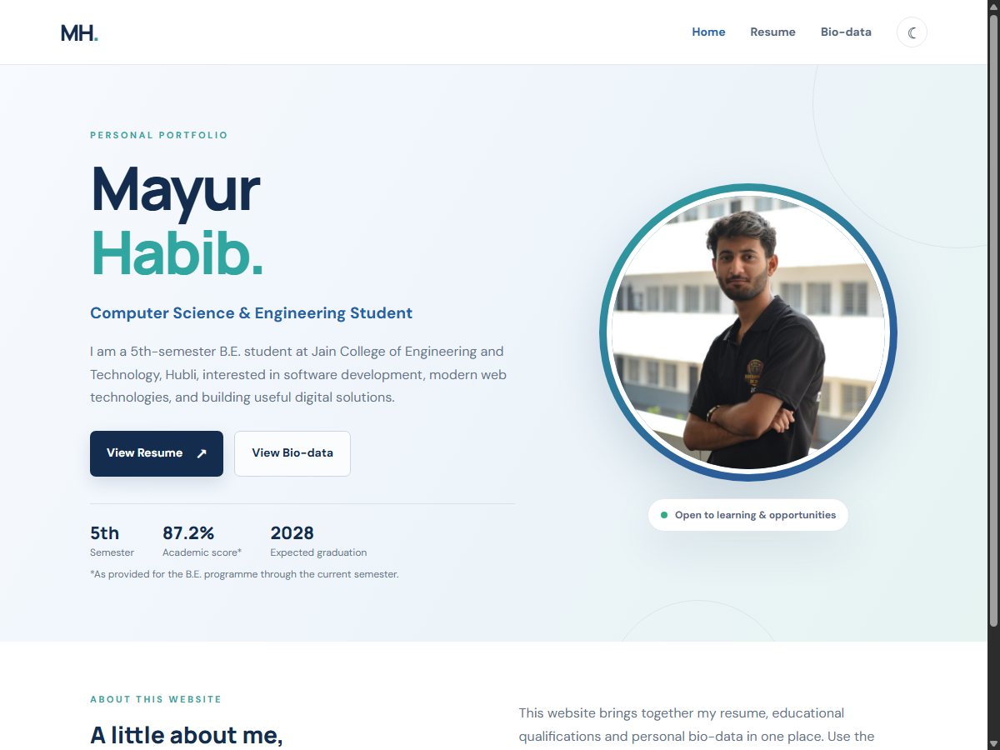
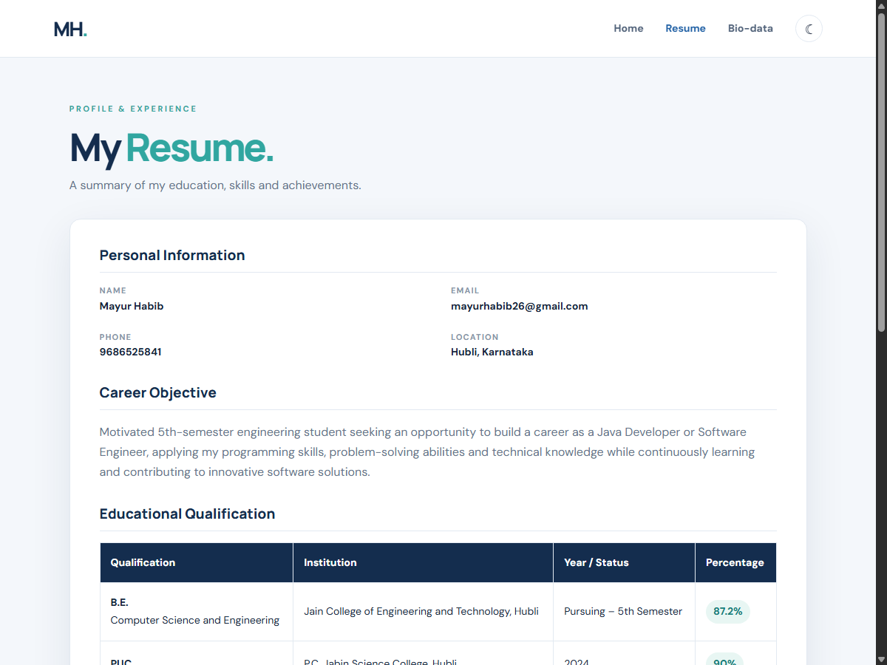
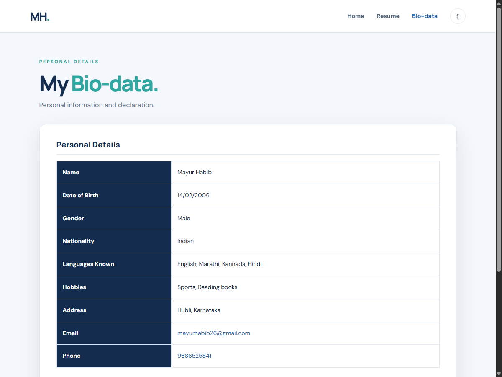

I hereby declare that the project entitled "Design and Development of a Personal Website with Resume and Bio-data" has been developed by me as part of my academic learning and practical experience in the field of web development.
I further declare that this project has been designed and implemented using HTML5, CSS3 and JavaScript to create a multi-page personal website consisting of Home, Resume and Bio-data sections. The project demonstrates the practical application of front-end web development concepts, including webpage structuring, styling, responsive design, navigation, interactive elements and basic website functionality.
I also declare that Visual Studio Code has been used as the development environment, Live Server has been utilized for local testing, and GitHub has been used for source code management. The completed website has been deployed using Netlify and GitHub Pages to make it accessible online through a public URL.
The information and content presented in this project report are true to the best of my knowledge and understanding. I confirm that the project has been completed as part of my academic activities and that the work presented in this report reflects my learning, implementation and efforts during the project development process.
I understand that the project and its documentation are being submitted for academic evaluation, and I take responsibility for the accuracy and authenticity of the information provided.
Name: Mayur Habib
USN: 2JH24CS122
Date: 27/11/2026
Signature: ___________________
I would like to express my sincere gratitude to my college and the Department of Computer Science and Engineering for providing me with the opportunity and necessary facilities to undertake and complete this project entitled "Design and Development of a Personal Website with Resume and Bio-data" as part of my academic learning.
I am deeply thankful to the management and teaching faculty of the institution for creating a supportive learning environment and encouraging students to gain practical knowledge through technical projects. Their guidance and academic support have helped me understand the concepts involved in web development and apply them during the implementation of this project.
I would like to extend my heartfelt thanks to my project guide Prof. Shilpa B Hosagoudra and faculty members for their valuable suggestions, continuous encouragement and guidance throughout the development process. Their feedback and recommendations helped me improve the design, functionality and overall presentation of the website.
I am also grateful to the Department of Computer Science and Engineering for providing access to the necessary resources and learning opportunities required to explore technologies such as HTML5, CSS3 and JavaScript. This project has helped me strengthen my understanding of front-end development, responsive webpage design, website testing and deployment using Netlify and GitHub.
I would also like to thank my friends and classmates for their helpful suggestions, discussions and assistance during the planning and development stages of the project. Their encouragement and feedback contributed to improving the overall quality of the work.
Finally, I express my sincere gratitude to my parents and everyone who directly or indirectly supported and motivated me throughout the completion of this project. Their encouragement and support played an important role in successfully completing this academic work.
The Personal Website entitled "Design and Development of a Personal Website with Resume and Bio-data" is a multi-page web application developed using HTML5, CSS3 and JavaScript to present an individual's personal, educational and professional information in a well-organized, attractive and easily accessible manner. The primary objective of this project is to create a professional online platform that provides visitors, recruiters and other interested individuals with information about the person's background, technical knowledge, educational qualifications, projects, achievements and career interests.
The website consists of three main webpages: Home, Resume and Bio-data. The Home page serves as the main landing page and provides a brief personal introduction along with a profile photograph, academic quick facts and navigation links to other sections. The Resume page presents educational qualifications, technical skills, programming languages and web technologies, projects, achievements, hobbies and other professional details in a structured format. The Bio-data page provides personal information, contact details, languages known, hobbies, declaration and signature details in an organized manner.
The website follows a modern Navy–Blue–Teal colour theme with both Light and Dark mode support, which provides a clean, attractive and consistent visual appearance across all webpages. HTML5 is used to develop the basic structure and content, while CSS3 is responsible for page layouts, styling, responsive design, colour combinations, hover effects and theme variables. JavaScript is implemented to provide interactive theme toggling functionality, persist user preferences and enhance the overall user experience.
Visual Studio Code is used as the development environment, and Live Server is used for local testing and verification. GitHub is utilized for source code management and version control, while Netlify and GitHub Pages are used to deploy and host the website online, making it accessible through a public URL.
This project provides practical exposure to front-end web development and helps in understanding webpage structuring, responsive user interface design, interactive functionality, website testing, source code management and web hosting. Overall, the Personal Website serves as a digital representation of an individual's profile and provides a simple and effective way to showcase personal and professional information.
| Sl.No. | Topic | Page No. |
| 1 | Introduction .................................................................................................... | 1 |
| 2 | Objectives ....................................................................................................... | 1 |
| 3 | Technologies Used ......................................................................................... | 1 |
| 4 | Website structure and Modules ................................................................... | 2 |
| 4.1 | Home Page ................................................................................................ | 2 |
| 4.2 | Resume Page ............................................................................................. | 2 |
| 4.3 | Bio-data Page ............................................................................................ | 2 |
| 5 | Design and Implementation .......................................................................... | 3 |
| 6 | Website Deployment .................................................................................... | 3 |
| 7 | Output ............................................................................................................. | 4 |
| 8 | Website Screenshots ..................................................................................... | 4 |
| 9 | Advantages .................................................................................................... | 6 |
| Conclusion ...................................................................................................... | 6 | |
| Future Enhancements .................................................................................. | 6 |
A Personal Website is a web-based platform developed to present an individual's personal information, educational qualifications, technical skills, projects and achievements in a structured manner.
The main purpose of this project is to create a simple, attractive and user-friendly website that acts as an online profile. It allows visitors, recruiters and other interested people to access the individual's information through different sections of the website.
The website is developed using HTML5, CSS3 and JavaScript. It consists of separate pages for Home, Resume and Bio-data, with a consistent Navy–Blue–Teal colour theme supporting both Light and Dark modes. The website is hosted using Netlify and GitHub Pages, making it accessible through a public URL.
| Technology | Purpose |
|---|---|
| HTML5 | Creating the structure and content of webpages |
| CSS3 | Designing layouts, colours, fonts and themes |
| JavaScript | Adding interactive light/dark theme toggle |
| Visual Studio Code | Writing and editing source code |
| Live Server | Running and testing the website locally |
| GitHub | Storing and managing project source files |
| Netlify / GitHub Pages | Hosting and deploying the website |
The Home page acts as the main landing page of the website. It provides a brief introduction and allows visitors to navigate to other sections.
The Resume page presents the individual's educational and professional profile in a structured format.
The Bio-data page displays personal and academic information in an organized format.
The website is designed using a modern Navy–Blue–Teal colour combination with Light and Dark theme support to provide a clean and professional appearance.
The three main colours are used as follows:
HTML5 is used to create the structure of the webpages. CSS3 is used for styling, responsive layouts, hover effects, CSS custom properties and consistent page design across Light and Dark modes.
JavaScript is used to implement interactive Light/Dark theme toggling and persist the user's selected theme across pages using localStorage.
Separate HTML files are maintained for each webpage, while common CSS and JavaScript files are used to maintain consistency and simplify website maintenance.
The website is deployed using Netlify and GitHub Pages, free static website hosting and cloud deployment services.
The final application successfully provides:
The following screenshots illustrate the final output of the developed Personal Website. They provide a visual representation of the Home, Resume and Bio-data pages, highlighting the website's layout, design, navigation and implemented functionalities.



The Personal Website was successfully designed and developed using HTML5, CSS3 and JavaScript. It provides an organized presentation of personal, educational and professional information through three separate webpages: Home, Resume and Bio-data.
The project provided practical experience in front-end development, responsive design, website testing, source code management using GitHub and deployment through Netlify.
Overall, the project strengthened web development skills and established a foundation for incorporating additional features and technologies in the future.
The website can be further enhanced by incorporating additional features and technologies, such as:
These improvements can make the website more interactive, efficient and suitable as a professional online portfolio.